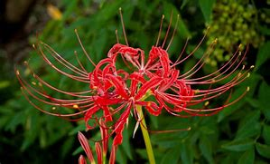

Lycoris radiata es una especie herbácea, perenne y bulbosa nativa de Asia y perteneciente a la familia de las Amarilidáceas. Se utiliza como ornamental en muchas partes del mundo por sus flores de color rojo brillante y sus pétalos de márgenes ondulados.
Las hojas aparecen en primavera, son de color cafe oscuro y estrechamente liguladas, de 15 cm de longitud por 5 mm de ancho. La nervadura media es pálida y el ápice foliar obtuso. El escapo floral tiene una altura de 8 dm. Las flores se disponen en una umbela de 7 a 9 integrantes rodeadas de 5 brácteas lanceoladas de 3 cm de longitud por 5 mm de ancho. El perianto es de color rojo brillante, con el tubo del perigonio de color verde. Los márgenes de los tépalos son fuertemente ondulados. Los estambres se hallan conspicuamente excertos de la corola. Florece en otoño.
